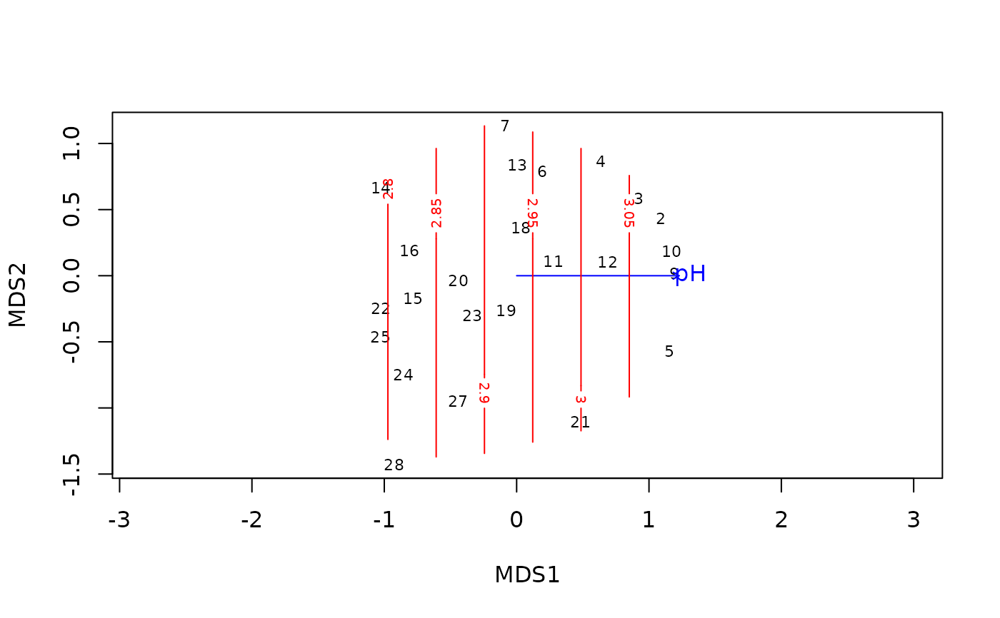

MDSrotate.RdFunction rotates a multidimensional scaling result so
that its first dimension is parallel to an external (environmental
variable). The function can handle the results from
metaMDS or monoMDS functions.
MDSrotate(object, vec, na.rm = FALSE, ...)An environmental variable or a matrix of such
variables. The number of variables must be lower than the number
of dimensions, and the solution is rotated to these variables in
the order they appear in the matrix. Alternatively vec can
be a factor, and the solution is rotated to optimal separation of
factor levels using lda.
Remove missing values from the continuous variable
vec.
Other arguments (ignored).
The orientation and rotation are undefined in multidimensional
scaling. Functions metaMDS and metaMDS
can rotate their solutions to principal components so that the
dispersion of the points is highest on the first dimension. Sometimes
a different rotation is more intuitive, and MDSrotate allows
rotation of the result so that the first axis is parallel to a given
external variable or two first variables are completely in a
two-dimensional plane etc. If several external variables are supplied,
they are applied in the order they are in the matrix. First axis is
rotated to the first supplied variable, and the second axis to the
second variable. Because variables are usually correlated, the second
variable is not usually aligned with the second axis, but it is
uncorrelated to later dimensions. There must be at least one free
dimension: the number of external variables must be lower than the
number of dimensions, and all used environmental variables are
uncorrelated with that free dimension.
Alternatively the method can rotate to discriminate the levels of a
factor using linear discriminant analysis
(lda). This is hardly meaningful for
two-dimensional solutions, since all rotations in two dimensions
have the same separation of cluster levels. However, the function
can be useful in finding a two-dimensional projection of clusters
from more than two dimensions. The last dimension will always show
the residual variation, and for \(k\) dimensions, only \(k-1\)
discrimination vectors are used.
Function returns the original ordination result, but with
rotated scores (both site and species if available), and the
pc attribute of scores set to FALSE.
Rotation to a factor variable is an experimental feature and may
be removed. The discriminant analysis weights dimensions by their
discriminating power, but MDSrotate performs a rigid
rotation. Therefore the solution may not be optimal.
data(varespec)
data(varechem)
mod <- monoMDS(vegdist(varespec))
mod <- with(varechem, MDSrotate(mod, pH))
plot(mod)
ef <- envfit(mod ~ pH, varechem, permutations = 0)
plot(ef)
ordisurf(mod ~ pH, varechem, knots = 1, add = TRUE)

#>
#> Family: gaussian
#> Link function: identity
#>
#> Formula:
#> y ~ poly(x1, 1) + poly(x2, 1)
#> Total model degrees of freedom 3
#>
#> REML score: -2.736071